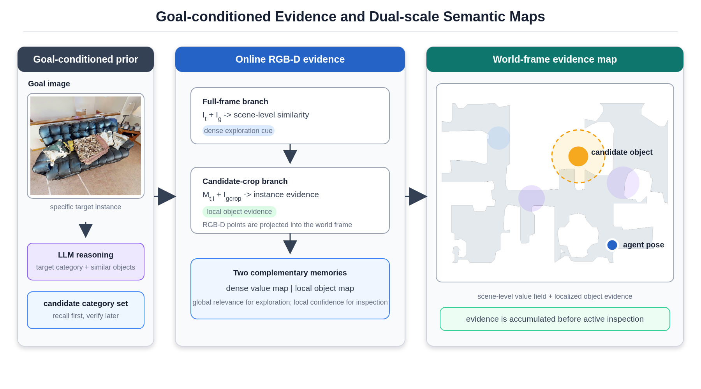
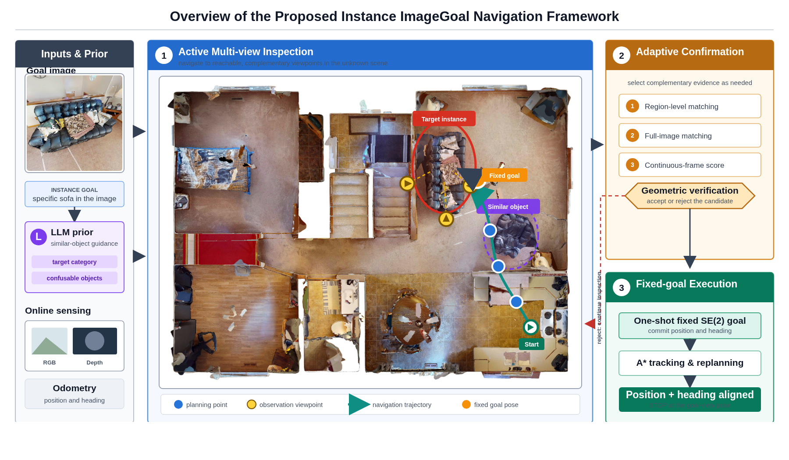
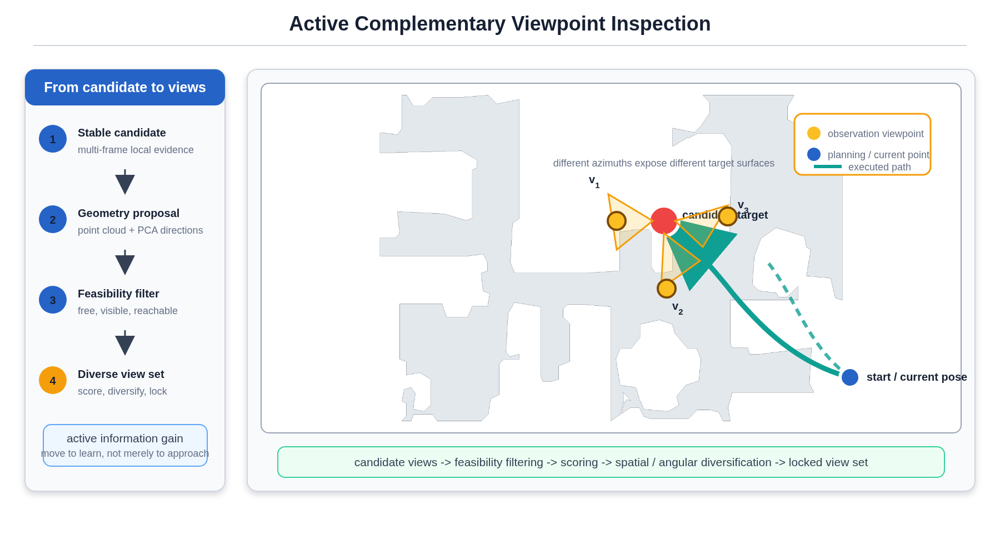
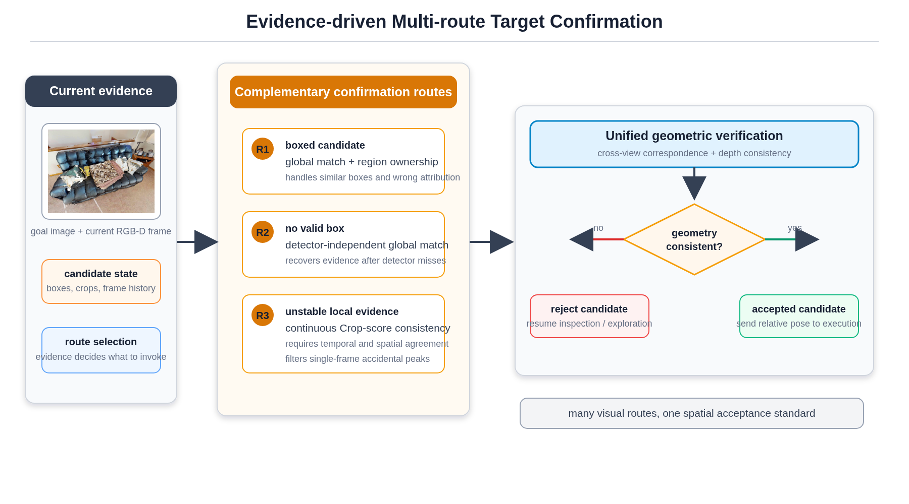
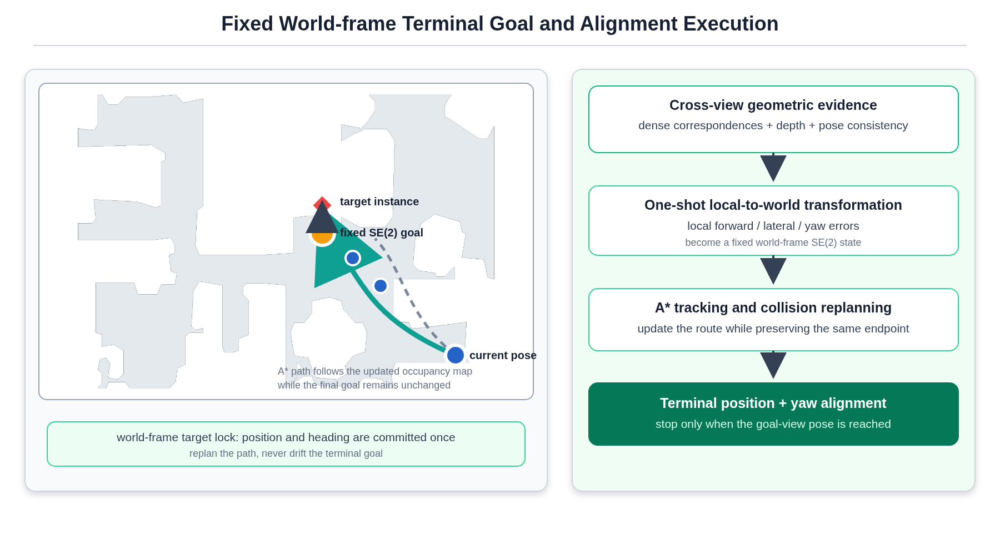

01
Goal-conditioned evidence
Full-frame relevance guides exploration while crop-level evidence is fused into a world-frame candidate map.

Zero-shot instance ImageGoal navigation
Active Multi-View
Instance Verification and
Goal-Viewpoint Alignment
A training-free navigation system
that moves to learn, verifies the
target instance with complementary
evidence, and stops at the position
and heading represented by the
goal image.
01 / Overview
VantageNav separates discovery from confirmation. Semantic evidence decides where to look; active motion provides complementary views; geometric verification decides whether the candidate is the requested instance; and a one-shot local-to-world transform locks the final goal.

02 / Evidence
We evaluate both whether the target is found and whether the robot recovers the observation viewpoint associated with the goal image.
| Trial | Distance | SPL | Time | Position error | Yaw error |
|---|---|---|---|---|---|
| Episode 1 | 14.30 m | 77.90% | 140 s | 0.54 m | 10 deg |
| Episode 2 | 18.05 m | 36.29% | 253 s | 0.37 m | 25 deg |
| Episode 3 | 13.02 m | 54.04% | 153 s | 0.16 m | 6 deg |
| Episode 4 | 8.61 m | 44.65% | 87 s | 0.85 m | 5 deg |
03 / Method
Each module addresses a failure mode that appears when the target is small, partially occluded, viewed from the wrong side, or confused with a similar instance.
Full-frame relevance guides exploration while crop-level evidence is fused into a world-frame candidate map.

Candidate geometry proposes viewpoints filtered by free space, visibility, reachability, distance, and angular diversity.

Region matching, detector-independent full-frame matching, and temporal stability share one geometric quality gate.

The verified local pose is transformed once into world-frame SE(2); replanning preserves the endpoint and aligns the final yaw.

04 / Real world
The complete reel and the individual clips below show the same verification-and-alignment pipeline deployed on a Unitree GO2.
05 / Simulation
These recordings expose the map update, active inspection, and fixed terminal execution stages in simulation. Startup and post-run reset intervals are trimmed.
06 / Platform
Perception, odometry, planning, and control stay modular so the terminal pose can be checked independently from ordinary navigation success.
VantageNav
The current system assumes at least one reachable viewpoint with sufficient target visibility and does not correct a biased goal-view estimate after commitment. Fully occluded or interaction-dependent targets remain open challenges.